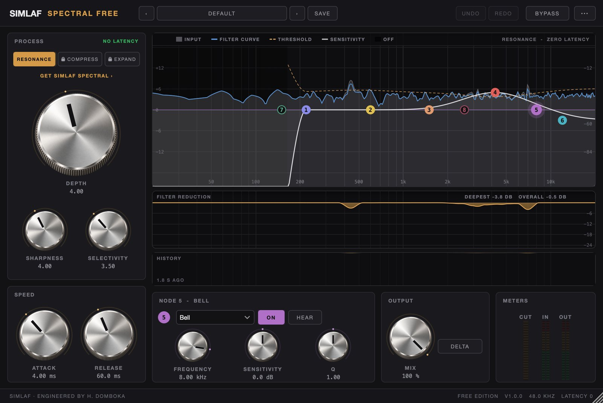

Free resonance suppressor · planned for 3 November 2026
SIMLAF Spectral Free
Resonance suppression at zero latency. Free, with no time limit.
Spectral Free finds harsh resonances and tames them as they happen, with nothing added to your latency. Use it on vocals, guitars, synths or a whole mix, while you record or while you mix.
The free edition does one job and does it fully: resonance suppression, at full quality, with three nodes. No time limit, no noise, no nag. The paid SIMLAF Spectral adds the Compress and Expand modes and all eight nodes.
Email me when it is out
Automatic sign-up is opening soon. You can request these updates by emailing us now.
Email for updatesAn email the day it is out, plus SIMLAF news now and then. Unsubscribe any time. See our privacy notice.
macOS now · Windows coming December 2026 · Linux and mobile apps to follow.

Our own clip · SIMLAF Spectral
Harsh hats tamed. Log drum untouched.
A bright Amapiano groove from NGOMA, then the same take through SIMLAF Spectral (stock preset: Overheads Harsh Hits). Hats, shaker and clap hits come down by about 4–6 dB between 3 and 8 kHz; the sensitivity curve starts at 1.8 kHz, so the log drum and kick are left alone. Level-matched A/B.
SIMLAF SpectralWhy free
Hear what zero latency feels like
The easiest way to show what SIMLAF Audio does is to let you use it. Spectral Free is yours to keep, with no trial period, no time limit and no payment details.
Want everything?
The full SIMLAF Spectral
The full version adds spectral compression, expansion and side-chain ducking, four parallel detection resolutions on a 1/48-octave grid, an 8-node sensitivity curve, Delta, and stereo, mid/side, mid-only and side-only modes. $79, or in The Whole Studio.
The Whole Studio · launch price
$2,347 of audio products. $199.
All 43 products available at launch, plus SIMLAF 2 when it ships in December 2026. $199 until 31 January 2027, then $399.